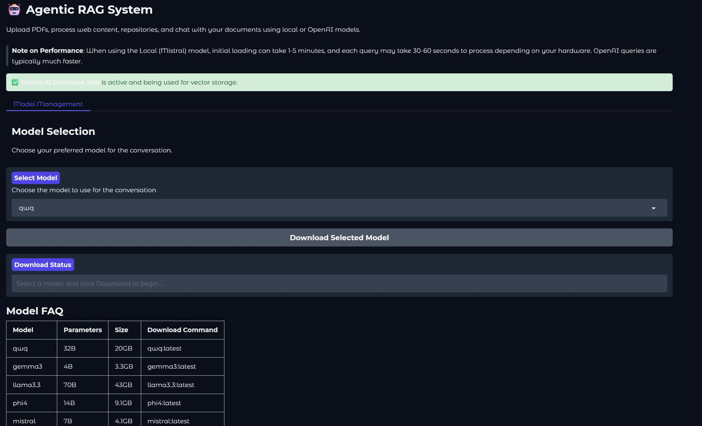
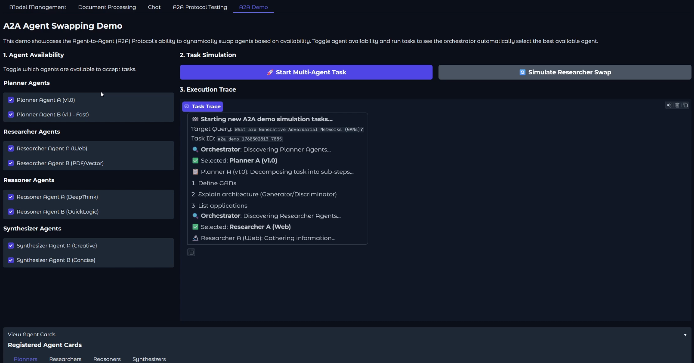
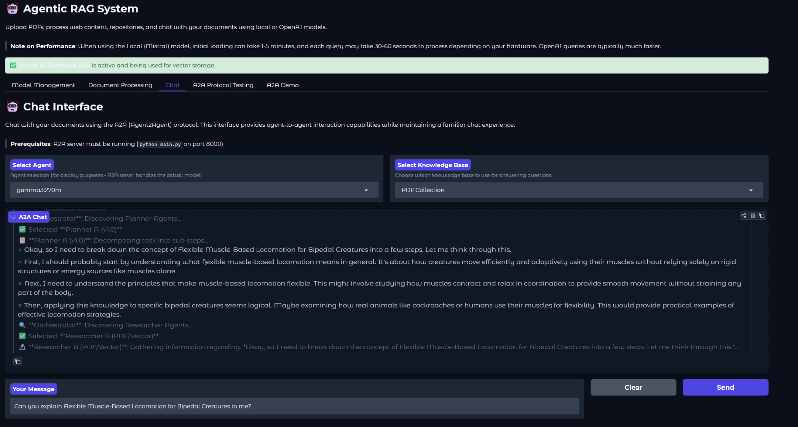
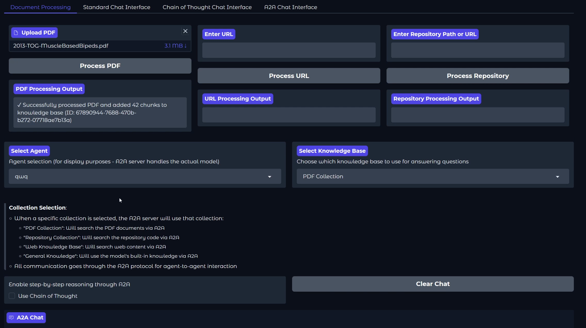
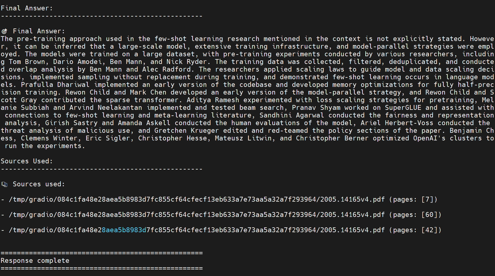

An intelligent RAG (Retrieval Augmented Generation) system that uses an LLM agent to make decisions about information retrieval and response generation. The system processes PDF documents and can intelligently decide which knowledge base to query based on the user's question.

The system has the following features:
gemma3:270m via Ollama



Here you can find a result of using Chain of Thought (CoT) reasoning:

Install and run Ollama (required for local LLM inference):
ollama pull gemma3:270m
# or the 4b model
ollama pull gemma3:latest
(Optional) For specialized agents, you may pull other Ollama models:
# for coding
ollama pull qwen2.5-coder:7b
ollama pull deepseek-r1:1.5b
Clone the repository and install dependencies:
git clone https://github.com/oracle-devrel/ai-solutions.git
cd ai-solutions/apps/agentic_rag
pip install -r requirements.txt
Start the Ollama service
Pull the models you want to use beforehand:
ollama pull <model> # see ollama.com/models
You can launch this solution in multiple ways:
The simplest way to start the entire system is using the unified launcher:
# Start everything (FastAPI + Gradio + Open WebUI)
python run_app.py
# Start only Gradio interface
python run_app.py --gradio
# Start only Open WebUI interface
python run_app.py --openwebui
# Start API server only (for external frontends)
python run_app.py --api-only
Default Ports:
| Service | Port | URL |
|---|---|---|
| FastAPI Backend | 8000 | http://localhost:8000 |
| Gradio UI | 7860 | http://localhost:7860 |
| Open WebUI | 3000 | http://localhost:3000 |
Start the API server:
# Option 1: Start the CLI (Command Line Interface)
python agent_cli.py
# Option 2: Start the GUI (Gradio Interface)
python gradio_app.py
# Alternative: Start the API server directly
python -m src.main
The API will be available at http://localhost:8000. You can then use the API endpoints as described in the API Endpoints section below.
The system provides a user-friendly web interface using Gradio, which allows you to:
ollama models directly from the interfaceTo launch the Gradio interface:
python gradio_app.py
This will start the Gradio server and automatically:
http://localhost:7860The interface has two main tabs:
Model Management:
Document Processing:
Chat Interface:
Note: The interface will automatically detect available models based on your configuration:
Open WebUI provides a modern, feature-rich chat interface that connects to the same backend as Gradio. It's ideal for users who prefer a ChatGPT-like experience.
pip install open-webui
# Option 1: Using the unified launcher (recommended)
python run_app.py --openwebui
# Option 2: Start Open WebUI standalone
python openwebui_app.py
# Option 3: Start both Gradio and Open WebUI
python run_app.py
Open WebUI will be available at http://localhost:3000.
Open WebUI sees 18 reasoning "models" that correspond to different reasoning strategies:
| Model | Description |
|---|---|
standard |
Standard response without specialized reasoning |
standard-rag |
Standard response with RAG context from all collections |
cot |
Chain of Thought - step-by-step reasoning |
cot-rag |
Chain of Thought with RAG context |
tot |
Tree of Thoughts - parallel path exploration |
tot-rag |
Tree of Thoughts with RAG context |
react |
ReAct - reasoning and acting interleaved |
react-rag |
ReAct with RAG context |
self-reflection |
Self-Reflection - iterative critique and refinement |
self-reflection-rag |
Self-Reflection with RAG context |
consistency |
Self-Consistency - multiple samples with voting |
consistency-rag |
Self-Consistency with RAG context |
decomposed |
Decomposed - breaks problems into sub-problems |
decomposed-rag |
Decomposed with RAG context |
least-to-most |
Least-to-Most - simplest to most complex |
least-to-most-rag |
Least-to-Most with RAG context |
recursive |
Recursive - recursive problem decomposition |
recursive-rag |
Recursive with RAG context |
Note: Models with -rag suffix perform unified similarity search across all collections (PDF, Web, Repository) before reasoning.
The backend exposes OpenAI-compatible endpoints that Open WebUI (and other clients) can consume:
# List available models
curl http://localhost:8000/v1/models
# Chat completion (streaming)
curl -X POST http://localhost:8000/v1/chat/completions \
-H "Content-Type: application/json" \
-d '{
"model": "cot-rag",
"messages": [{"role": "user", "content": "What is machine learning?"}],
"stream": true
}'
# Health check
curl http://localhost:8000/v1/health
The easiest way to use the system is through the interactive CLI:
python agent_cli.py
Interactive Experience:
╭──────────────────────────────────────────────╮
│ AGENTIC RAG SYSTEM CLI │
│ Oracle AI Vector Search + Ollama (Gemma 3) │
╰──────────────────────────────────────────────╯
? Select a Task:
Process PDFs
Process Websites
Manage Vector Store
Test Oracle DB
Chat with Agent (RAG)
Exit
Features:
gemma3:270m (Ollama).If you prefer to run individual components manually:
To process a PDF file and save the chunks to a JSON file, run:
# Process a single PDF
python -m src.pdf_processor --input path/to/document.pdf --output chunks.json
# Process multiple PDFs in a directory
python -m src.pdf_processor --input path/to/pdf/directory --output chunks.json
# Process a single PDF from a URL
python -m src.pdf_processor --input https://example.com/document.pdf --output chunks.json
# sample pdf: https://arxiv.org/pdf/2203.06605
Process a single website and save the content to a JSON file:
python -m src.web_processor --input https://example.com --output docs/web_content.json
Or, process multiple URLs from a file and save them into a single JSON file:
python -m src.web_processor --input urls.txt --output docs/web_content.json
To add documents to the vector store and query them, run:
# Add documents from a chunks file, by default to the pdf_collection
python -m src.store --add chunks.json
# for websites, use the --add-web flag
python -m src.store --add-web docs/web_content.json
# Query the vector store directly, both pdf and web collections
# llm will make the best decision on which collection to query based upon your input
python -m src.store --query "your search query"
python -m src.local_rag_agent --query "your search query"
The system includes a test script to verify Oracle DB connectivity and examine the contents of your collections. This is useful for:
To run the test:
# Basic test - checks connection and runs a test query
python tests/test_oradb.py
# Show only collection statistics without inserting test data
python tests/test_oradb.py --stats-only
# Specify a custom query for testing
python tests/test_oradb.py --query "artificial intelligence"
The script will:
config.yaml file--stats-only, insert test data and run a sample vector searchRequirements:
config.yaml:ORACLE_DB_USERNAME: ADMIN
ORACLE_DB_PASSWORD: your_password_here
ORACLE_DB_DSN: your_connection_string_here
oracledb Python package installedTo query documents using the local Ollama model, run:
# Using local ollama model (gemma3:270m by default)
python -m src.local_rag_agent --query "Can you explain the DaGAN Approach proposed in the Depth-Aware Generative Adversarial Network for Talking Head Video Generation article?"
First, we process a document and query it using the local model. Then, we add the document to the vector store and query from the knowledge base to get the RAG system in action.
# 1. Process the PDF
python -m src.pdf_processor --input example.pdf --output chunks.json
#python -m src.pdf_processor --input https://arxiv.org/pdf/2203.06605 --output chunks.json
# 2. Add to vector store
python -m src.store --add chunks.json
# 3. Query using local model
python -m src.local_rag_agent --query "Can you explain the DaGAN Approach proposed in the Depth-Aware Generative Adversarial Network for Talking Head Video Generation article?"
You can deploy the application using Docker. This ensures a consistent environment with all dependencies pre-installed.
Build the Docker image:
docker build --network=host -t agentic-rag .
Run the container:
# Recommended for Linux (bypasses Docker network/DNS issues)
docker run -d \
--network=host \
--gpus all \
--name agentic-rag \
agentic-rag
# Alternative (Port mapping)
# Note: May require DNS configuration if container cannot access host/internet
# docker run -d \
# --gpus all \
# -p 7860:7860 \
# -p 11434:11434 \
# --name agentic-rag \
# agentic-rag
Note: The --gpus all flag requires the NVIDIA Container Toolkit. If you don't have a GPU, the application will run in CPU-only mode (slower), and you can omit this flag.
Access the application:
http://localhost:7860http://localhost:11434For Kubernetes deployment, we provide a comprehensive set of manifests and scripts in the k8s/ directory.
Prerequisites:
kubectl configuredDeploy using the helper script:
cd k8s
# Deploy to default namespace
./deploy.sh
# Or deploy with a specific Hugging Face token (if needed)
./deploy.sh --hf-token "your-token"
Manual Deployment:
kubectl apply -f k8s/local-deployment/
For detailed Kubernetes instructions, including OKE (Oracle Kubernetes Engine) and Minikube, please refer to the Kubernetes README.
The system implements an advanced multi-agent Chain of Thought system, allowing complex queries to be broken down and processed through multiple specialized agents. This feature enhances the reasoning capabilities of both local and cloud-based models.
The CoT system consists of four specialized agents:
You can activate the multi-agent CoT system in several ways:
# Using local gemma3:270m model (default)
python local_rag_agent.py --query "your query" --use-cot
# Test with local model (default)
python tests/test_new_cot.py
POST /query
Content-Type: application/json
{
"query": "your query",
"use_cot": true
}
When CoT is enabled, the system will show:
Example:
Step 1: Planning
- Break down the technical components
- Identify key features
- Analyze implementation details
Step 2: Research
[Research findings for each step...]
Step 3: Reasoning
[Logical analysis and conclusions...]
Final Answer:
[Comprehensive response synthesized from all steps...]
Sources used:
- document.pdf (pages: 1, 2, 3)
- implementation.py
The multi-agent CoT approach offers several advantages:
POST /upload/pdf
Content-Type: multipart/form-data
file: <pdf-file>
This endpoint uploads and processes a PDF file, storing its contents in the vector database.
POST /query
Content-Type: application/json
{
"query": "your question here"
}
This endpoint processes a query through the agentic RAG pipeline and returns a response with context.
The system consists of several key components:
docling to extract and chunk text from PDF documentstrafilatura to extract and chunk text from websitesgitingest to extract and chunk text from repositoriesOracle AI Database (default) or ChromaDB (fallback)gemma3:270m via Ollama as the default local modelThe RAG Agent flow is the following:
You can run the system from the command line using:
python -m src.local_rag_agent --query "Your question here" [options]
| Argument | Description | Default |
|---|---|---|
--query |
The query to process | Required |
--embeddings |
Select embeddings backend (oracle or chromadb) |
oracle |
--model |
Model to use for inference | gemma3:270m |
--collection |
Collection to query (PDF, Repository, Web, General) | Auto-determined |
--use-cot |
Enable Chain of Thought reasoning | False |
--store-path |
Path to ChromaDB store (if using ChromaDB) | embeddings |
--skip-analysis |
Skip query analysis step | False |
--verbose |
Show full content of sources | False |
--quiet |
Disable verbose logging | False |
Query using Oracle DB (default):
python -m src.local_rag_agent --query "How does vector search work?"
Force using ChromaDB:
python -m src.local_rag_agent --query "How does vector search work?" --embeddings chromadb
Query with Chain of Thought reasoning:
python -m src.local_rag_agent --query "Explain the difference between RAG and fine-tuning" --use-cot
Query a specific collection:
python -m src.local_rag_agent --query "How to implement a queue?" --collection "Repository Collection"
python run_app.py # Start all UIs (default)
python run_app.py --gradio # Gradio only (port 7860)
python run_app.py --openwebui # Open WebUI only (port 3000)
python run_app.py --api-only # Backend API only (port 8000)
Open WebUI provides a modern chat interface with:
-rag search all collections automaticallySame chat experience as standard interfaces but uses A2A protocol.
Granular Execution Trace: Displays step-by-step execution including Orchestrator logic, Agent Selection, and detailed intermediate steps.
Real Vector Retrieval: Shows actual retrieved content from the knowledge base during the Research phase, not just final answers.
Agent-to-Agent Communication: All queries go through A2A protocol.
Collection Support: PDF, Repository, Web, and General Knowledge collections.
Chain of Thought: Step-by-step reasoning through A2A.
Status Monitoring: Check A2A server connectivity.
Same UI: Familiar chat interface with A2A backend.
Test the Agent2Agent (A2A) protocol functionality.
Health Check: Verify A2A server connectivity.
Agent Card: Get agent capability information.
Agent Discovery: Find agents with specific capabilities.
Document Query: Test A2A document querying with different collections.
Task Management: Create, monitor, and track long-running tasks.
Task Dashboard: View all tracked tasks and their statuses.
Complete Test Suite: Run all A2A tests in sequence.
ollama pull.Note: The interface will automatically detect available models based on your configuration:
gemma3:270mis the default option (requires Ollama to be installed and running).- Other Ollama models can be selected if available.
- A2A testing requires the A2A server to be running separately.
The agentic_rag system now includes full support for the Agent2Agent (A2A) protocol, enabling seamless communication and collaboration with other AI agents. This integration transforms the system into an interoperable agent that can participate in multi-agent workflows and ecosystems.
The system implements a distributed multi-agent Chain of Thought (CoT) architecture where each specialized agent can run on separate servers and communicate via the A2A protocol. This enables:
┌─────────────────────────────────────────────────────────────────────┐
│ User Query via Gradio │
└────────────────────────────┬────────────────────────────────────────┘
│
▼
┌──────────────────────┐
│ A2A Orchestrator │
│ (localhost:8000) │
└──────────────────────┘
│
┌────────────────┼────────────────┐
│ │ │
▼ ▼ ▼
┌─────────────────┐ ┌─────────────────┐ ┌─────────────────┐
│ Planner Agent │ │Researcher Agent │ │ Reasoner Agent │
│ Agent ID: │ │ Agent ID: │ │ Agent ID: │
│planner_agent_v1 │ │researcher_a_v1 │ │reasoner_a_v1 │
│ │ │ │ │ │
│ URL: http:// │ │ URL: http:// │ │ URL: http:// │
│ localhost:8000 │ │ localhost:8000 │ │ localhost:8000 │
│ OR │ │ OR │ │ OR │
│ server1:8001 ◄──┼──► server2:8002 ◄──┼──► server3:8003 │
└─────────────────┘ └─────────────────┘ └─────────────────┘
│
▼
┌─────────────────┐
│Synthesizer Agent│
│ Agent ID: │
│synthesizer_a_v1 │
│ │
│ URL: http:// │
│ localhost:8000 │
│ OR │
│ server4:8004 │
└─────────────────┘
│
▼
┌──────────────────┐
│ Final Answer │
│ to User │
└──────────────────┘
{base_url}/a2a + agent_idhttp://server1:8001/a2a{"method": "agent.query", "params": {"agent_id": "planner_agent_v1", ...}}To deploy agents on different servers, update config.yaml:
AGENT_ENDPOINTS:
planner_url: http://server1.example.com:8001
researcher_url: http://server2.example.com:8002
reasoner_url: http://server3.example.com:8003
synthesizer_url: http://server4.example.com:8004
Local Development (default):
AGENT_ENDPOINTS:
planner_url: http://localhost:8000
researcher_url: http://localhost:8000
reasoner_url: http://localhost:8000
synthesizer_url: http://localhost:8000
Each specialized agent has its own agent card describing its capabilities:
| Agent ID | Name | Role | Capability |
|---|---|---|---|
planner_agent_v1 |
Strategic Planner | Problem decomposition | Breaks queries into 3-4 actionable steps |
researcher_agent_v1 |
Information Researcher | Knowledge gathering | Searches vector stores and extracts findings |
reasoner_agent_v1 |
Logic & Reasoning | Logical analysis | Applies reasoning to draw conclusions |
synthesizer_agent_v1 |
Information Synthesizer | Response generation | Combines steps into coherent final answer |
Enhanced Interoperability: The A2A protocol enables the agentic_rag system to communicate with other AI agents using a standardized protocol, breaking down silos between different AI systems and frameworks.
Scalable Multi-Agent Workflows: By implementing A2A, the system can participate in complex multi-agent workflows where different agents handle specialized tasks (document processing, analysis, synthesis) and collaborate to solve complex problems.
Industry Standard Compliance: A2A is an open standard developed by Google, ensuring compatibility with other A2A-compliant agents and future-proofing the system.
Enterprise-Grade Security: A2A includes built-in security mechanisms including authentication, authorization, and secure communication protocols.
Agent Discovery: The protocol enables automatic discovery of other agents and their capabilities, allowing for dynamic agent composition and task delegation.
The A2A implementation consists of several key components:
a2a_models.py): Pydantic models for JSON-RPC 2.0 communicationa2a_handler.py): Main request handler and method routertask_manager.py): Long-running task execution and status trackingagent_registry.py): Agent discovery and capability managementagent_card.py): Capability advertisement and metadataThe system supports the following A2A protocol methods:
document.query: Query documents using RAG with intelligent routingdocument.upload: Process and store documents in vector databaseagent.query: NEW - Query specialized CoT agents (Planner, Researcher, Reasoner, Synthesizer) for distributed reasoningtask.create: Create long-running tasks for complex operationstask.status: Check status of running taskstask.cancel: Cancel running tasksagent.discover: Discover other agents and their capabilitiesagent.register: Register new agents with the A2A registryagent.card: Get agent capability informationhealth.check: System health and status checkThe system exposes the following A2A endpoints:
POST /a2a: Main A2A protocol endpoint for agent communicationGET /agent_card: Get the agent's capability cardGET /a2a/health: A2A health check endpoint# Query documents via A2A protocol
curl -X POST http://localhost:8000/a2a \
-H "Content-Type: application/json" \
-d '{
"jsonrpc": "2.0",
"method": "document.query",
"params": {
"query": "What is machine learning?",
"collection": "PDF",
"use_cot": true
},
"id": "1"
}'
# Create a long-running task
curl -X POST http://localhost:8000/a2a \
-H "Content-Type: application/json" \
-d '{
"jsonrpc": "2.0",
"method": "task.create",
"params": {
"task_type": "document_processing",
"params": {
"document": "large_document.pdf",
"chunk_count": 100
}
},
"id": "2"
}'
# Check task status
curl -X POST http://localhost:8000/a2a \
-H "Content-Type: application/json" \
-d '{
"jsonrpc": "2.0",
"method": "task.status",
"params": {
"task_id": "task-id-from-previous-response"
},
"id": "3"
}'
# Discover agents with specific capabilities
curl -X POST http://localhost:8000/a2a \
-H "Content-Type: application/json" \
-d '{
"jsonrpc": "2.0",
"method": "agent.discover",
"params": {
"capability": "document.query"
},
"id": "4"
}'
# Discover specialized CoT agents
curl -X POST http://localhost:8000/a2a \
-H "Content-Type: application/json" \
-d '{
"jsonrpc": "2.0",
"method": "agent.discover",
"params": {
"capability": "agent.query"
},
"id": "5"
}'
# Get agent card
curl -X GET http://localhost:8000/agent_card
# Query the Planner Agent
curl -X POST http://localhost:8000/a2a \
-H "Content-Type: application/json" \
-d '{
"jsonrpc": "2.0",
"method": "agent.query",
"params": {
"agent_id": "planner_agent_v1",
"query": "How does machine learning work?"
},
"id": "6"
}'
# Query the Researcher Agent
curl -X POST http://localhost:8000/a2a \
-H "Content-Type: application/json" \
-d '{
"jsonrpc": "2.0",
"method": "agent.query",
"params": {
"agent_id": "researcher_agent_v1",
"query": "How does machine learning work?",
"step": "Understand the basic concept of ML"
},
"id": "7"
}'
# Query the Reasoner Agent
curl -X POST http://localhost:8000/a2a \
-H "Content-Type: application/json" \
-d '{
"jsonrpc": "2.0",
"method": "agent.query",
"params": {
"agent_id": "reasoner_agent_v1",
"query": "How does machine learning work?",
"step": "Analyze the key components",
"context": [{"content": "Research findings about ML algorithms..."}]
},
"id": "8"
}'
# Query the Synthesizer Agent
curl -X POST http://localhost:8000/a2a \
-H "Content-Type: application/json" \
-d '{
"jsonrpc": "2.0",
"method": "agent.query",
"params": {
"agent_id": "synthesizer_agent_v1",
"query": "How does machine learning work?",
"reasoning_steps": [
"ML is a subset of AI...",
"It uses algorithms to learn from data...",
"Key components include training and inference..."
]
},
"id": "9"
}'
The A2A implementation includes comprehensive tests covering all functionality:
# Run all A2A tests
python tests/run_a2a_tests.py
# Run specific test categories
python -m pytest tests/test_a2a.py::TestA2AModels -v
python -m pytest tests/test_a2a.py::TestA2AHandler -v
python -m pytest tests/test_a2a.py::TestTaskManager -v
python -m pytest tests/test_a2a.py::TestAgentRegistry -v
The test suite includes:
The system publishes its capabilities through agent cards. There is a main agent card for the RAG system and individual cards for each specialized CoT agent:
{
"agent_id": "agentic_rag_v1",
"name": "Agentic RAG System",
"version": "1.0.0",
"description": "Intelligent RAG system with multi-agent reasoning",
"capabilities": [
{
"name": "document.query",
"description": "Query documents using RAG with context retrieval",
"input_schema": { ... },
"output_schema": { ... }
},
{
"name": "agent.query",
"description": "Query specialized CoT agents for distributed reasoning",
"input_schema": {
"agent_id": "planner_agent_v1 | researcher_agent_v1 | reasoner_agent_v1 | synthesizer_agent_v1",
...
},
"output_schema": { ... }
}
],
"endpoints": {
"base_url": "http://localhost:8000",
"authentication": { ... }
}
}
Each CoT agent has its own card accessible via agent discovery:
# Discover all specialized agents
curl -X POST http://localhost:8000/a2a \
-H "Content-Type: application/json" \
-d '{"jsonrpc": "2.0", "method": "agent.discover", "params": {"capability": "agent.query"}, "id": "1"}'
This returns agent cards for:
planner_agent_v1): Problem decomposition and strategic planningresearcher_agent_v1): Information gathering from vector storesreasoner_agent_v1): Logical reasoning and analysissynthesizer_agent_v1): Final answer synthesisThe Gradio interface includes an A2A Chat Interface tab that allows you to interact with the distributed CoT agents:
Example Query Flow:
User: "What is machine learning?"
↓ (A2A: agent.query → planner_agent_v1)
Planner: Creates 4 steps
↓ (A2A: agent.query → researcher_agent_v1) × 4
Researcher: Gathers info for each step
↓ (A2A: agent.query → reasoner_agent_v1) × 4
Reasoner: Analyzes each step
↓ (A2A: agent.query → synthesizer_agent_v1)
Synthesizer: Combines into final answer
↓
User: Receives comprehensive answer with sources
A2A Endpoint Configuration (for distributed deployment):
Edit config.yaml to specify agent endpoints:
AGENT_ENDPOINTS:
planner_url: http://localhost:8000 # or remote server
researcher_url: http://localhost:8000 # or remote server
reasoner_url: http://localhost:8000 # or remote server
synthesizer_url: http://localhost:8000 # or remote server
Basic A2A functionality requires no additional configuration. The system automatically:
pytest-asyncio is installed# Check A2A health
curl -X GET http://localhost:8000/a2a/health
# View agent capabilities
curl -X GET http://localhost:8000/agent_card
# Test basic functionality
python -c "from a2a_models import A2ARequest; print('A2A models working')"
Inspired from oracle ai development advancement in ai in current days.